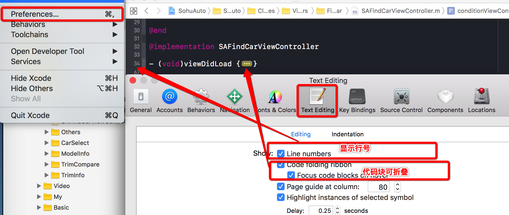

Xcode的基本操作、快捷键、调试
注意：原地址在此,下面部分纯粹为个人记忆摘抄。

偏好设置
通过“command+,”快捷键或”Xcode|Preferences”菜单呼出偏好设置。
（1）主题及字体（Preferences->Fonts & Colors）
选中一种主题（theme），例如“Midnight”，然后shift选择Source Editor/Console中的所有项，点击Fonts设置字体。Xcode默认字体为menlo，可选Consolas、Monaco等其他等宽字体。
（2）文本编辑配置（Preferences->Text Editing）

- Show Line Numbers：在gutter中显示行号。
- Code folding ribbon：显示折叠ribbon。
- Page guide at column：显示一行最多支持80个字符的提示分割线。 Indentation：
Prefer indent using：Spaces（为保持一致的视觉呈现和行末注释对齐，建议使用空格）
Tab width：4 spaces（tabexpand，1个tab=4个空格）
Indent width：4 spaces（自动缩进步长=4个空格）
（3）SCM（Preferences->Source Control）
Enable Source Control：启用/禁用XCode自带Source Control Manager(SCM)。
（4）SDK/Simulator（Preferences->Downloads）
Downloads->Components：可下载SDK和Simulator。
（5）构建输出目录（Preferences->Locations->Locations）
- 当选择为Default时，Derived Data的目录为~/Library/Developer/Xcode/DerivedData。
- 当选择为Relative时，Derived Data的目录为当前.xcodeproj所在的目录。
- 当选择为Custom时，Derived Data的目录需自定义。
不建议使用绝对路径，因为写死之后，换环境或换平台，又要重新修改路径，建议使用相对路径（Relative）。
代码阅读(快捷键)
View Navigator
command+0：Show/Hide left tool panel
command+1-8：Project/Symbol/Find/Issue/Test/Debug/Breakpoint/Log Navigator
option+command+0：Show/Hide right tool panel
option+command+1/2：show the file/quick help inspector
View Editor Organization
control+1：Show Related Items（例如Superclasses/Subclasses、Callers/Callees、Protocol Implementor/Implemented、Includes/Included By）。可输入实时搜索匹配。
control+2/3：Show Previous/Next History。可输入实时搜索匹配。
control+4：Show Top Level Items。
control+5：Show Group Files（当前文件夹内的所有文件）。可输入实时搜索匹配。
control+6：Show Document Items（当前文件的Symbols）。可输入实时搜索匹配。
可直接选中符号，然后“Navigate->Reveal in Symbol Navigator”，打开该接口的符号列表。
Focus Switch
command+J：焦点切换（Move Focus），可配合鼠标和方向键。带‘+’的“Move focus to a new assistant editor”可以快速在辅助编辑窗口中打开头文件（.h）/实现文件（.m，*.mm）。
shift+command+J：在项目导航中定位当前文件（Reveal in Project Navigator）。
Symbol Jump
control+command+↑/↓：切换头文件/实现文件（switch between a source file (.m,.mm,.cc) and the associated header file(.h)）。
shift+command+O：Open Quickly，可快速查找文件、符号。
command+点击Editor中选中的符号：跳转到符号定义（jump to definition）。
control+command+J：跳转到指定符号的定义处或实现处（Go to Declaration/Definition）。有时工程正在Loading、Indexing或Processing files时，“command+点击”无法响应，此时可试试control+command+J。
在Project Navigator中选中文件右键或通过菜单“File->Show in Finder”：在Finder中定位该文件。
Symbol Navigator
command+点击Editor中选中的非单一层次定义符号：Show in Symbol Navigator:
filter0：底部输入符号（show symbols with matching name）= filter1 result+filter3 result
filter1：show only class and protocol symbols (hide other global symbol types)，包括project和system层次。
filter2：show only project-defined symbols，过滤显示当前工程中的符号。filter2的结果是filter1的子集，较常用。
filter3：show only containers(hide members)，过滤显示包含该单词的符号。
Help
option+点按：查看选中符号的帮助提示（Quick Help for Selected Item）。
option+双击：打开选中符号的帮助文档。
代码编辑
File | New
control+command+N：File | New | Workspace
shift+command+N：File | New | Project
Text Editing
command+[/]：向前/向后缩进
option+command+[/]：Move Line Up/Down
command+/：注释选中的代码
Parentheses/Brackets/Braces Matching：双击某个分隔符（如()、[]、{} 等），Xcode会选中匹配代码块。
Eidtor Window/Tab Switch
command+shift+[/]：切换标签页
单指左右滑动（control+command+←/→）：在单标签页打开的多个文件间切换
Code Folding
option+command+←/→：折叠当前代码块
option+shift+command+←/→：折叠该文件内所有代码块（方法/函数）
Console & Scheme
shift+command+Y：显示控制台（Show/Hide the debug area）
option+command+R：编辑配置（Edit Scheme）
Gutter & Ribbon

焦点列：灰色深度与代码嵌套深度相关，鼠标悬停可突出显示右侧相应代码块，鼠标单击可折叠右侧相应代码块（Code Folding）。
说明：从左到右，依次是“导航窗格（Navigator）->边列（Gutter）->焦点列（Focus
Ribbon）->代码编辑窗口（Standard Editor）”。
Auto Completion
esc（command+.）：就当前输入上下文呼出/隐藏Auto
Completion提示：上下方向键在提示中选择选项，enter(return)选中，tab可一截一截匹配；tab可在各个占位符之间移动。
输入Objective-C对象及 ]，自动完成中缀符(infixnatation)包围。
Find & Replace
command+F：当前文件查找。
option+command+F：当前文件替换。
Find：可指定查找内容（Text/References/Definitions/Regular Expression）；
放大镜：下拉可查看最近查找历史；
In Project：查找范围（可指定Group）；
Text：匹配规则（可指定Containing，Matching，Starting with，Ending with）；
Case：是否区分大小写（可指定 Matching/Ignoring）。
shift+command+F（command+3）：全局查找。也可以在选择符号后，右键（control+点击）->Find Selected Text in workspace...
option+shift+command+F：全局替换。
Replace：逐个替换；
All：所有替换；
Done：替换完成。
辅助编辑（Assistant Editor）
Assistant Editor有点类似VC中的Code Definition Window。
option+command+enter：打开Assistant Editor。
command+enter：关闭Assistant Editor。
使用快捷键进行切换或跳转动作时，若同时按下option可以在辅助编辑窗口中打开相应文件或符号（For optional navigation (Option-clicking or Option-choosing a file), opens the file in a new Assistant editor pane.）。若在辅助窗口中操作，则在主窗口（Standard Editor）中打开。
- option+点击Project Navigator中选中的文件：在辅助编辑窗口中打开选中文件。
- option+command+点击Editor中选中的符号：在辅助编辑窗口中打开符号定义（jump to definition in assistant editor）。
- option+control+command+↑/↓：在辅助窗口中打开对应的头文件（.h）/实现文件（.m,.mm,.cc）。 点击查看shift+command+O、shift+command+F（command+3）选中的文件或符号时，可同时按下option在辅助编辑窗口中打开。
在control+1~6中打开选择结果时，均可同时按下option在辅助编辑窗口中打开。
若在按下option的同时按下shift通常会出现一个导航窗格，可选择在new window/tab/assistant-editor显示打开。
ForOption-Shift navigation (Option-Shift-click or Option-Shift-choose a file), Xcode displays a graphical navigation chooser showing the current layout. The chooserprompts you to open the file in anyopen editor pane in any window and tab, or to open the file in anew editor pane, window, or tab.
20140219220929453.png
环境变量（Build Setting Macros）
（1）查看环境变量宏
命令行进入HelloWorld工程目录，执行xcodebuild命令并带上“-showBuildSettings”参数：
$ xcodebuild -project HelloWorld.xcodeproj -target HelloWorld -configuration Debug -showBuildSettings > xcodebuild_showBuildSettings.txt
则xcodebuild_showBuildSettings.txt中保存了Build settings for action build and target "HelloWorld”，其中dump了所有的环境变量。
（2）Xcode5(Mac OS X 10.9)的部分环境变量
约定1：~=当前账户的HOME目录，例如“/Users/faner”。
约定2：build构建基础路径：BUILD_PATH = ~/Library/Developer/Xcode/DerivedData/Build。可通过“File->Project Settings”查看Derived Data Location。
约定3：环境变量宏（Build Setting Macros）引用格式：${MACRO}，同Build Phases Run Script中的语法。
下面是摘选自xcodebuild_showBuildSettings.txt的部分常用环境变量。
(a) ARCH & PLATFORM & SDK
ARCHS = i386
CURRENT_ARCH = i386
PLATFORM_DIR = /Applications/Xcode.app/Contents/Developer/Platforms/MacOSX.platform
PLATFORM_NAME = macosx
SDKROOT = /Applications/Xcode.app/Contents/Developer/Platforms/MacOSX.platform/Developer/SDKs/MacOSX10.9.sdk
SDK_DIR = /Applications/Xcode.app/Contents/Developer/Platforms/MacOSX.platform/Developer/SDKs/MacOSX10.9.sdk
SDK_NAME = macosx10.9
(b) PROJECT & SOURCE
PROJECT = HelloWorld
PROJECT_DIR =~/Projects/Learn Objective-C/HelloWorld
PROJECT_FILE_PATH =${PROJECT_DIR}/HelloWorld.xcodeproj
PROJECT_NAME = HelloWorld
SOURCE_ROOT =${PROJECT_DIR}
SRCROOT =${PROJECT_DIR}
(c) BUILD & CONFIGURATION
BUILD_DIR =BUILD_PATH/Products
BUILD_ROOT =BUILD_PATH/Products
BUILT_PRODUCTS_DIR =BUILD_PATH/Products/Debug
CONFIGURATION = Debug
CONFIGURATION_BUILD_DIR =BUILD_PATH/Products/Debug
CONFIGURATION_TEMP_DIR =BUILD_PATH/Intermediates/HelloWorld.build/Debug
(d) PRODUCT & TARGET
PRODUCT_NAME = HelloWorld
PRODUCT_TYPE = com.apple.product-type.tool// Project Template: Command Line Tool
TARGET_BUILD_DIR =BUILD_PATH/Products/Debug
TARGET_NAME = HelloWorld
（3）设置环境变量
Product -> Edit Scheme（option+command+R）->Arguments->Environment Variables中可以添加自定义环境变量（Name为名称，Value为值）。
运行调试
（1）Console
shift+command+Y：显示控制台（Show/Hide the debug area）
shift + command + K：清除控制台（Clean）
（2）Build
Product -> Edit Scheme（option+command+R）->Info->Build Configuration：选择生成版本（Debug or Release）
command + B：构建（Buid）
（3）Target
一个Target是指在一个Project中构建的一个产品，它包含了构建该产品的所有文件，以及如何构建该产品的配置。
一个定义好构建过程的Target成为一个Scheme，可在Scheme中定义Target的六种构建过程：Build/Run/Test/Profile/Analyze/Archive。
Product -> Edit Scheme（option+command+R）->Manage Schemes可对Scheme的六种构建过程进行配置（可配置项包括Info、Arguments、Options）。
在Project Navigator中选中某个xcodeproj（例如QQ.xcodeproj），将进入Project Setting页面，可点击左侧图标show/hide project and targets list：
0012.png
点击targets项可分别设置各target的Build Settings；右击可对target进行delete。
（4）Issue & Errors
编译错误（error）和警告（warning）过多时，只显示编译错误：
0013.png
点击底端的感叹号，即可只显示编译错误，忽略编译警告：
0014.png
（5）Run
command + R：运行（Run），可能会先编译。若按下control直接运行上次build的product（Run Without Building）。
command + .：停止运行（Stop）
（6）Breakpoint
command + \：当前行设置/取消断点；通过鼠标点击蓝色断点来启用/禁用当前行断点。
command + Y：全局激活或禁用所有的断点，激活进入调试模式（此时断点蓝色可见）。
边列（Gutter）中的断点/警告可右键呼出Reveal in Breakpoint/Issue Navigator。
trick：编辑断点（Edit Breakpoint）：
Condition：设置断点的触发条件，例如“i==3”（注意不能有空格）表示当i等于3时该断点才会被触发。
Ignore：设置断点需要被忽略多少次才会中断，若设置成5则表示第6次遇到该断点时才触发。
Action：设置断点触发时的动作，可以为Debugger Command、Log Message、Shell Command或Sound。
例如可设置以下Debugger Command：
（1）读取std::string sig的内存buffer值：mem read sig.c_str() -c sig.size()；
（2）打印NSData实例sig：po sig
（7）Debug
F6：下一步（Step Over），逐过程单步调试，不进入函数体。
(fn+)F7：进入（Step Into）函数体。可能与多媒体键有冲突，故需要fn辅助。
(fn+)F8：跳出（Step Out）函数体。可能与多媒体键有冲突，例如呼叫iTunes，故需要fn辅助。
control+command+Y：逐断点（continue）继续执行。
trick：移动指令指针（Move the instruction pointer）：
0015.png
断点调试运行时，可以将绿色指针箭头（Line 47）移动到其他行（Line 49）或其他断点（Line 51）实现跳转执行。
Watch
shift+command+M：Debug Workflow->View Memory。
command+K：Debug Workflow->Clear Console。
Debug Workflow->ShowDisassembly When Debugging，可进行汇编指令级调试。
trick：修改变量内存值（change memory value while debugging）：
调试运行时，可以在底部的调试窗口（Debug Area，可通过Shift+Command+Y呼出）右键某个变量，除了可以进行View Memory/View Value As之外，还可以选择Edit Value运行时编辑内存变量的值。
这种手动设置指定值，在调试某些难以复现的bug或进行边界测试非常有用，可以避免在验证某个问题时反复改值重新编译。
lldb调试命令：
n/next：step over；
s/step：step into；
finish：step out；
c/continue：goto next breakpoint；
expr/expression：Evaluate a C/ObjC/C++ expression（动态执行C/ObjC/C++表达式）；
p/print/expr/expression：print as a C/C++ basic variable；
po/expr -O/expression -O：Print as an Objective-C object；
call：调用。其实上述p/po后接表达式(expression)也有调用的功能，一般只在不需要显式输出，或是无返回值时使用call，用于动态调试插入调用代码。
例如可以在viewDidLoad:里面设置断点，然后在程序中断的时候输入以下命令：
call [self.view setBackgroundColor:[UIColor redColor]]
继续运行程序，view的背景颜色将变成红色！
bt（backtrace），打印当前调用堆栈（crash堆栈），“bt all”可打印所有thread的堆栈（相当于command+6的Debug Session Navigation）。
image：可用于寻址，有多个组合命令，比较实用的一种用法是寻找栈地址对应的代码（行）位置。
例如某个UITableView总共有2个section，当其引用的currentSection.index≥2时将会引起[UITableView rectForHeaderInSection:]调用异常，可使用expr动态改值制造crash场景模拟调试。
此时crash时的控制台bt显示异常出现在应用层代码“0x00d055b8 - [FACategoryTableView FACategorySectionHeaderDidTouched:] + 744”处（其中0x00d055b8为当前栈(代码段)偏移量，744为栈帧偏移量——PC指针相对函数入口的偏移）。
那么具体是FACategoryTableView.m文件哪一行代码调用引起的异常呢？此时通过“image lookup --address”后接bt的call stack中的代码段偏移地址（0x00d055b8）即可定位出异常调用的代码行位置。
x/memory read：dump指定地址的内存（Read from the memory of the process being debugged），后接起止地址或-c指定count加起始地址。可help mem read查看帮助：
Syntax:
memory read[]
Command Options Usage:
size指定内存块（block/item）的大小，默认为1byte。
--size)：The size in bytes to use when displaying with the selected format.
count指定内存块（block/item）的个数，可配合起始地址使用。
-c( --count)：The number of total items to display.
format指定内容显示格式，格式符同print：c-char，s-string，d-decimal，x-hex。
-f( --format)：Specify a format to be used for display.
Command Samples:
（a）起止地址
(lldb)mem read 0x10b88f0c 0x10b88f0c+9
0x10b88f0c: 39 38 37 36 35 34 33 32 31 987654321
（b）起始地址+内存块count
(lldb)mem read 0x10b88f0c -c 9
0x10b88f0c: 39 38 37 36 35 34 33 32 31 987654321
（c）起始地址+内存块size+内存块count（dump hex format）
(lldb)memory read -s 1 -f x -c 9 0x10b88f0c
0x10b88f0c: 0x39 0x38 0x37 0x36 0x35 0x34 0x33 0x32
0x10b88f14: 0x31
（d）起始地址+内存块size+内存块count（dump char format）
(lldb)memory read -s 1 -f c -c 9 0x10b88f0c
0x10b88f0c: 987654321
（e）起始地址+内存块size+内存块count（dump string format）
(lldb)mem read 0x10b5cf2c -f s -c 1
0x10b88f0c: "987654321"
（f）起始地址+内存块size+内存块count（dump int format）
(lldb)memory read -s 4 -f x -c 3 0x10b88f0c
0x10b88f0c: 0x36373839 0x32333435 0x109f0031
memory write：改写指定地址的内存（Write to the memory of the process being debugged）。可help mem write查看帮助：
Syntax: memory write
[[...]]
（10）启用NSZombieEnabled调试EXC_BAD_ACCESS
当你对已释放的对象发送消息（90%的可能是对引用计数为0的对象再release）或release那些autorelease对象时，就会出现报EXC_BAD_ACCESS这样的错误。
默认设置下 Xcode不会给你定位具体是哪一行代码不该去使用已释放的对象，或者release用错了。
Product -> Edit Scheme（option+command+R） -> Diagnostics ，勾选“Objective-C”之后的“Enable Zombie Objects”。
设置NSZombieEnabled环境变量后，一个对象销毁时会被转化为_NSZombie；设置NSZombieEnabled后，当你向一个已经释放的对象发送消息，这个对象就不只是报EXC_BAD_ACCESS Crash，还会放出一个错误消息，然后以一种可预测的可以产生debug断点的方式消失， 因此我们可以找到具体或者大概是哪个对象被错误的释放或引用了。
注意：NSZombieEnabled只能在调试的时候使用，千万不要忘记在产品发布的时候去掉，因为NSZombieEnabled不会真正去释放dealloc对象的内存，一直开启后果自负！
参考
《Xcode Keyboard Shortcuts and Gestures》
《Xcode Key Bindings & Gestures》
《提升Xcode效率的小技巧》
《Xcode环境变量及路径设置》
《Xcode构建输出目录》
《LLDB Quick Start Guide》
《LLDB to GDB Command Map》
《Xcode gdb/lldb调试命令》